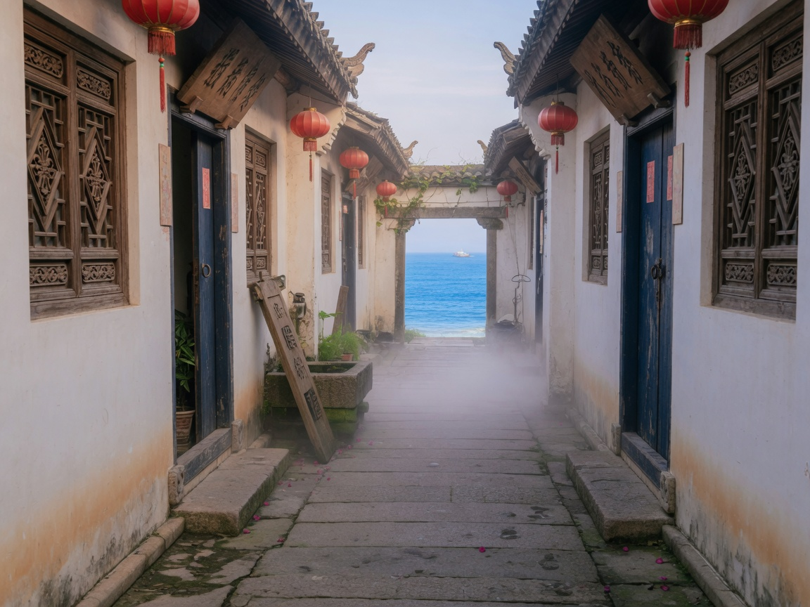
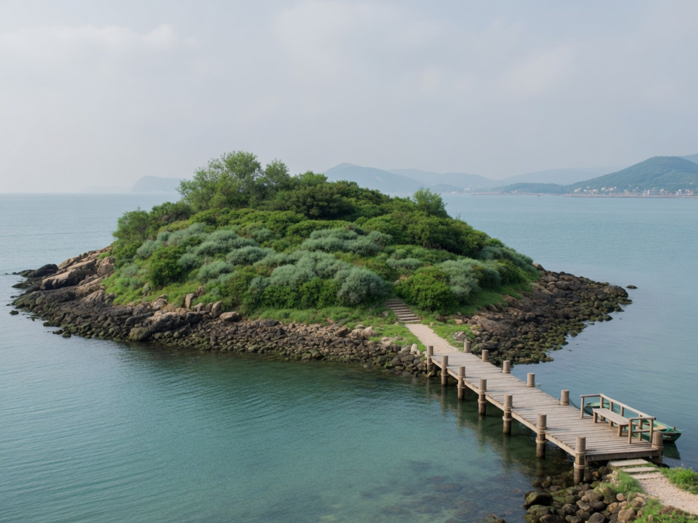

乡旅与海 e 模式 · Web 平台
把海边短途，收成一条能走的路线。
面向山东沿海七市。按天数、路线类型与预算匹配行程，展开每日时间轴，并给出饮食、住宿与费用参考。
- 80%愿意使用 AI 定制行程
- 7 市青岛至滨州沿海覆盖
- 3 维天数 · 类型 · 预算
山东沿海七市
产品地域锚定：海洋 + 乡村场景，覆盖从青岛到滨州的海岸带。
- 青岛湾区与近郊渔村
- 烟台海岸与葡萄酒乡
- 威海慢节奏海湾
- 日照沙滩与滨海步道
- 东营黄河入海与湿地
- 潍坊滨海乡村
- 滨州沿海平原与渔家
三种海边节奏
海滨休闲、文化古城、海岛体验，对应不同路线类型与天数组合。
体验
类型环


不是堆攻略，是帮你收敛到可执行方案。
信息分散、行程同质、预算难估，是沿海短途常见问题。乡海云途用天数、路线类型、预算三级条件筛选，再给出每日安排与费用参考。
-
三维筛选 1-2 / 3-5 / 6-7 天，文化探索到亲子休闲，预算分经济、舒适、豪华
-
每日行程 按天展开时间轴，饮食、住宿与费用估算同页呈现
-
关键词搜索 按路线名称模糊匹配，仅搜路线，不搜用户
-
相关推荐 同天数其他路线最多 3 条，方便横向比较后再决定

智能推荐演示
对齐 MVP 表单：选择行程天数、路线类型与预算级别，查看匹配结果示意。
选择条件后点击「智能推荐」，查看示意结果（本地演示，不连后端）。
示例路线
山东沿海主题种子示意，正式数据将扩展至七市更多目的地。
路线详情结构
对齐 MVP：概述、每日行程时间轴、饮食 / 住宿 / 费用三卡、相关推荐。
即墨古城非遗漫游
从县衙到文庙，再走老街手作铺，一天完成古城文化主轴，节奏舒缓、预算可控。
详细行程安排
-
县衙与文庙
参观即墨古城核心文保点，了解地方治理与儒家教育脉络。
-
老街午餐
本地面食与海鲜小馆，人均约 40-60 元。
-
非遗手作与市集
走访剪纸、面塑等工坊，可选择体验课。
饮食推荐
即墨老酒配海鲜小炒，古城内老字号面馆。
住宿建议
当日往返；若过夜可选古城客栈或近郊民宿。
费用估算
约 ¥100-180 / 人（不含远程交通）
用户在意什么
来自项目调研摘要，用于说明产品切入点（非实时统计看板）。
适用人群
对齐项目书目标用户，先服务这三类短途决策场景。

亲子家庭
需要安全、节奏可控、有教育感的 1-2 日海岛或古城行程。
城市中高收入家庭
周末沿海放松，预算舒适型，重视餐饮与住宿建议是否靠谱。
年轻背包客
经济型、可搜索关键词、希望快速得到可执行路线而非长文攻略。
以前要翻十几个笔记，现在选完天数和预算，就能直接看到可走的路线。
使用方式
从注册到查看行程，主路径尽量短。智能推荐、搜索与详情在正式版中需登录。
-
注册登录
用户名唯一，密码哈希存储。登录后顶栏显示欢迎名。
-
选择条件
天数、类型、预算三项提交，规则匹配返回路线列表。
-
查看行程
打开详情时间轴，对照餐饮、住宿与费用估算。
-
提交反馈
文本入库，用于后续体验改进；Wave 2 可接情感分析。
关键词搜索
在顶栏输入「金沙滩」「灵山岛」等词，返回路线卡片。重建版会补齐搜索入口，并去掉 legacy 的「匹配用户」区块。
产品节奏
Wave 1 对齐已跑通的规则推荐；AI 对话与电商预订不在当前落地页承诺范围。
Wave 1 · MVP
- 注册 / 登录 / 登出
- 智能推荐与相关推荐
- 关键词搜索与路线详情
- 反馈提交 · 山东沿海种子数据
Wave 2 · AI + SEO
- 文心一言对话推荐
- 路线摘要与反馈情感分析
- 语义 URL、sitemap、JSON-LD
Wave 3 · 远景
- 票务住宿特产一站预订
- AR/VR 导览、政府端监管
- 竞赛叙事能力，非近期开发
意见反馈
正式版将文本入库并提示成功。此处为落地页演示，提交后仅本地提示，不会发送到服务器。